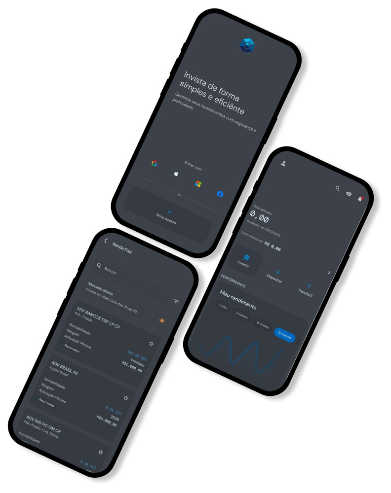
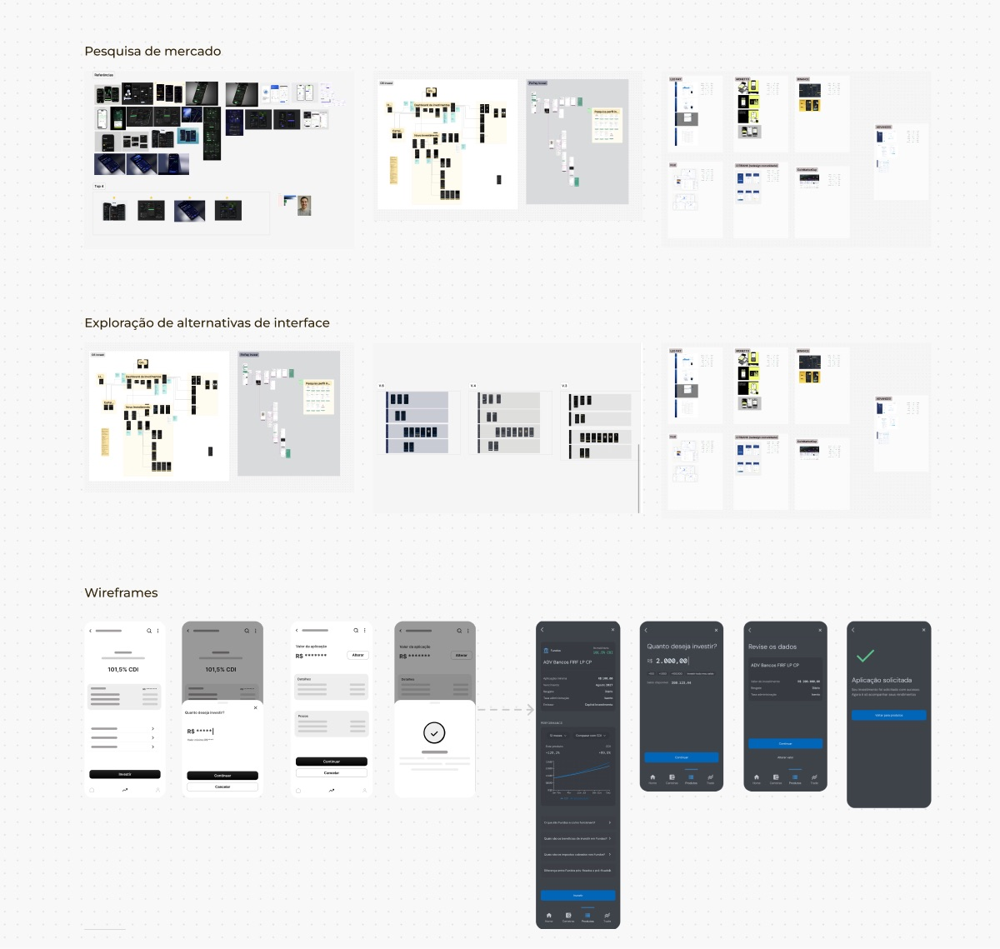

Aplicativo de Investimentos
✦ IAO app foi desenvolvido como um projeto conceitual para posicionar a marca no segmento de investimentos digitais, cobrindo a jornada completa do usuário, do primeiro acesso ao acompanhamento de rendimentos.
Atuei na condução de discovery e pesquisa de mercado, analisando players e padrões de interface para orientar a definição de jornadas, fluxos e interfaces alinhados ao posicionamento da marca. Utilizei IA como apoio na geração de protótipos em alta fidelidade para validação e aprovação com a liderança. O projeto serviu como base estratégica para futuras iniciativas digitais do grupo.
*Por questões de confidencialidade, entre em contato para saber detalhes do projeto.

Processo: pesquisa de mercado e benchmark de players do setor, exploração de alternativas de interface e wireframes até chegar às telas finais.
